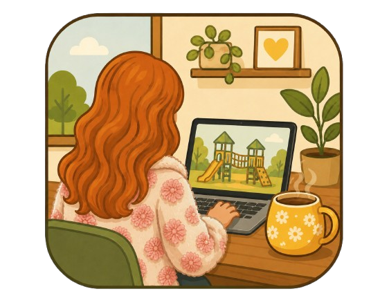

Wo wachsen Obst, Beeren oder Nüsse, die man für den eigenen Bedarf pflücken oder sammeln kann? Die Naschkarte zeigt solche Fundorte.
BaumobstBeerenNüsse
Die Naschkarte wächst gerade. 🍎🌰 Die ersten geprüften Fundorte werden nach und nach ergänzt.

Kaffeekasse
Der Spielplatzatlas Spelle ist ein privates Herzensprojekt, welches in meiner Elternzeit entstanden ist und wird in meiner Freizeit gepflegt. Wenn dir die Seite geholfen hat, freue ich mich über einen virtuellen Kaffee.
Die Unterstützung hilft bei Domainkosten, dem Betrieb der Website und dem Ausbau des Spielplatzatlas.